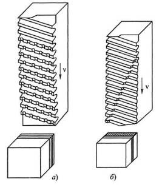
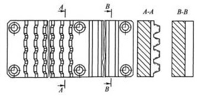
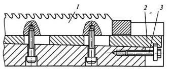

Наружным протягиванием обрабатывают различные поверхности с незамкнутым, открытым контуром: плоскости, уступы, пазы, вогнутые и выпуклые цилиндрические и сложные фасонные поверхности, например впадины зубчатых колес и т.п. В соответствии с этим существует большое разнообразие конструкций наружных протяжек.
В отличие от внутренних, наружные протяжки, как правило, не имеют хвостовиков и направляющих, а имеют только режущие и калибрующие зубья. Открытые обрабатываемые поверхности позволяют назначать размеры конструктивных элементов и площади сечения тела протяжки с большим запасом. Поэтому наружные протяжки на прочность обычно не проверяются. Условия для схода стружки при этом более благоприятны и проверку на помещаемость стружки в канавках выполняют только при протягивании узких пазов.
К особенностям наружных протяжек относится возможность назначать намного большие, близкие к оптимальным, задние углы (α = 8...10°), так как размер протяжки по высоте при переточке не зависит от размера детали. Он может регулироваться с помощью клиньев, винтов и подкладок. Благодаря этому суммарная стойкость наружных протяжек значительно больше стойкости внутренних протяжек.
Протягивание может производиться либо без предварительной обработки заготовок, полученных литьем, ковкой или штамповкой со снятием припусков величиной не менее 5...6 мм, либо после строгания или фрезерования.
При наружном протягивании используются те же схемы резания, что и при внутреннем протягивании. На рисунке ниже показаны профильная и генераторная схемы резания, применяемые при обработке плоскостей. Для снижения шероховатости поверхностей последние зубья протяжки (б) выполнены по профильной схеме резания.
По способу деления срезаемого слоя по толщине чаще всего используется одинарная схема резания.
При протягивании широких плоских поверхностей и срезании больших припусков предложена разновидность групповой схемы резания - трапецеидальная схема, при которой припуск срезается последовательно двумя секциями (группами) зубьев, имеющих подъем на каждый зуб. Зубья первой секции вырезают узкие трапецеидальные пазы, а зубья второй секции, имеющие прямолинейные режущие кромки, срезают оставшиеся выступы. В конце последней секции предусмотрены чистовые зубья с уменьшенным подъемом на зуб. На черновых же зубьях такая схема деления припуска позволяет устанавливать большие подъемы на зуб и производить протягивание - без предварительной обработки поверхности и даже при наличии «корки».
Трапециевидные зубья первой секции изготавливают фрезерованием и шлифованием напроход с поднятием на 1,0...1,1 мм задней части протяжки для образования задних углов на вспомогательных кромках. Благодаря этому такие протяжки просты в изготовлении, имеют большой запас на переточку, большую стойкость и меньшую длину.
Заточка зубьев протяжек при прямолинейной форме режущих кромок может проводиться как по задней, так и по передней поверхности, а при фасонной форме режущих кромок - только по передней поверхности.
По конструкции наружные протяжки могут быть цельными или сборными, состоящими из нескольких секций сравнительно небольшой длины (до 300 мм). Секции крепятся к корпусу винтами сверху, снизу или сбоку с использованием клиньев и планок. Крепление винтами снизу более компактное и простое. Однако при переточке и настройке таких секций приходится снимать корпус всей протяжки со станка. Этого можно избежать путем крепления секций винтами сверху.
При протягивании длинных поверхностей для обеспечения непрерывного удаления стружки из зоны резания у наружных протяжек зубья делают наклонными с углом β = 70...80°. При этом обеспечивается равномерная работа протяжки.
У протяжек с наклонными зубьями возникает боковая составляющая силы резания PN - нормальная к направлению протягивания, для восприятия которой, а также главной составляющей PZ в корпусе протяжки, закрепляемой на каретке станка, предусматриваются пазы или упорные планки.